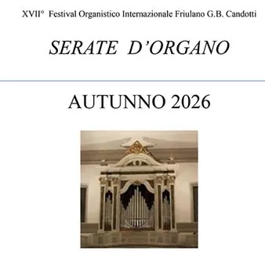

gio 8 ott · dalle 20:45
Concerto Ottoni e Organo
Chiesa di S. Quirino - Udine (UD) 08-10-2026, 20:45 Trombe: Fabiano Cudiz, Andrea Picogna, Sara Miani, Alberto Domini Flicorno soprano: Enrico Tavano Corni: Alessandra Rodaro, Matteo Fontanot Tromboni: Alessio Cristin, Marco Maiero, Federico Biondi, Federico Marazzi Tuba…
 Indicazioni
Indicazioni
- Costi e prenotazioni
- Costo non indicato · Prenotazione non indicata
- Programma
- Programma da verificare. Apri la fonte ufficiale per orari e possibili aggiornamenti.
- In caso di maltempo
- Nessuna indicazione specifica pubblicata.
- Note
- Acquisito automaticamente dalla fonte.
L’EVENTO
Descrizione completa
Trombe: Fabiano Cudiz, Andrea Picogna, Sara Miani, Alberto Domini
Flicorno soprano: Enrico Tavano
Corni: Alessandra Rodaro, Matteo Fontanot
Tromboni: Alessio Cristin, Marco Maiero, Federico Biondi, Federico Marazzi
Tuba: Massimo Tomadini
Organo: Alberto Pez
Melchior Franck (1580-1639) ***
Intrada (ad. di Marco Maiero) Henry Purcell (1659-1695) ***
Trumpet tune e Air Giovanni Gabrieli (1557-1612) ***
Sonata Pian e Forte (ad. di Marco Maiero) Johann Adam Reincken (1643-1722) *
Fuga in sol minore Feanz Joseph Haydn (1732-1809) **
Achieved is the Glorious Work
(ad. di Chip De Stefano) Johann Sebastian Bach (1685-1750) ***
Arioso
dalla Cantata n. 156 “Ich steh mit einem Fuss im Graße”
(ad. di Marco Maiero) Antonio Vivaldi (1678-1741) ***
Concerto RV 383 in sib maggiore Op. 4 n. 1
da La stravaganza
(ad. di Marco Maiero) Johann Sebastian Bach *
Fantasia e Fuga in sol minore BWV 542 Arcangelo Corelli (1653-1713) **
Concerto per Tromba e archi in fa maggiore
(ad. di Marco Maiero) Edward Elgar (1857-1934) ***
Nimrod da Enigma variations Op. 36
(ad. di Marco Maiero) Georg Friedrich Haendel (1685-1759) ***
Ouverture da The music of the royal fireworks
(ad. di Marco Maiero) * Organo solo
** Ottoni soli
*** Organo e ottoni Ingresso libero
IL PROGRAMMA
Programma e orari
Appuntamenti raccolti dalle fonti elencate. Dove manca un orario, non è ancora disponibile in questa scheda.
Programma pubblicato
- Dal 2026-10-08 al 2026-10-08
INFORMAZIONI UTILI
Prima di partire
- Controllare la fonte prima di partire.
ORGANIZZAZIONE